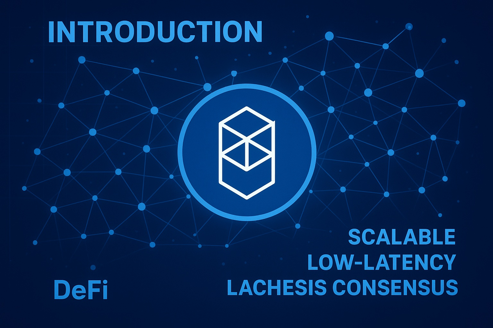

Fantom Price Forecast for End of 2025: Detailed Review and Market Outlook
This article is intended for informational purposes only and does not constitute financial advice. Cryptocurrency markets are volatile and involve risks.
Introduction
As of August 20, 2025, 01:21 AM EEST, Fantom (FTM) trades at about $0.39, positioning itself as a leading high-speed layer-1 blockchain recognized for minimal fees and rapid transactions. Powered by its Lachesis consensus mechanism, Fantom enables decentralized finance (DeFi), NFTs, and a wide range of dApps with near-instant transaction settlement. Its ecosystem has expanded notably through DeFi adoption and strategic collaborations. This article analyzes FTM’s potential price movement by the end of 2025, considering bullish and bearish paths, main growth catalysts, and potential risks tied to the evolving market environment.
Current Situation
As of August 20, 2025, Fantom is priced near $0.39, marking a 25% rise from June 2025, when it traded at $0.31. Over the last 30 days, FTM demonstrated resilience, closing positive on 56% of sessions and showing moderate volatility of 5.5%. The Fear and Greed Index at 68 highlights strong investor confidence, supported by Fantom’s expanding DeFi space, fresh dApp rollouts, and new partnerships. Over the past year, FTM climbed from $0.24 — a 62% yearly gain. Since 2020, when it was worth just $0.017, the token has surged by over 2200%, driven by its scalable design and diverse applications.
Price Predictions for End of 2025
Experts present varied forecasts for Fantom’s price by December 2025. A bearish case anticipates a drop to $0.25 if a 30–40% market correction unfolds in early 2025. Moderate outlooks see FTM consolidating between $0.45 and $0.60, supported by steady DeFi and dApp expansion. In a bullish scenario, Fantom could climb to $0.80–$1.00, especially if the expected rally occurs during February–April 2025. Some analysts suggest FTM may approach $0.75 by October 2025 if partnerships and ecosystem growth continue apace.
Factors Driving Price Growth
- Lachesis Consensus: Fantom’s aBFT consensus mechanism delivers speed and scalability, making it attractive for developers.
- DeFi Ecosystem: Expanding DeFi protocols like SpookySwap and SpiritSwap strengthen demand for FTM and ecosystem activity.
- Partnerships: Key alliances with projects and institutions increase adoption and market trust.
- Market Rally: A possible crypto bull phase in early 2025 could create favorable conditions for FTM’s price appreciation.
- Low Transaction Costs: Cheap and efficient transactions boost Fantom’s appeal across dApps, NFTs, and micro-payments.
Risks and Downward Factors
- Market Volatility: A 30–40% correction in early 2025 could negatively impact FTM’s value and investor confidence.
- Regulatory Risks: Stricter crypto regulations worldwide may slow Fantom’s adoption and accessibility.
- Competition: Rivalry from other layer-1 platforms such as Solana, Cardano, and Avalanche may pressure Fantom’s market position.
Volatility Analysis
Between July and August 2025, Fantom’s price rose from $0.31 to $0.39, showing a 25% increase with 5.5% volatility, reflecting greater stability compared to previous cycles. A yearly gain of 62% highlights strong performance. Technical signals, including bullish momentum in the 50-day and 200-day EMAs, point to further upside potential. A possible recovery in early 2025 could amplify growth, as Fantom broadens its DeFi and dApp offerings. With scalable infrastructure and ultra-low fees, FTM is well-positioned for lasting adoption and value growth.

Conclusion
By late 2025, Fantom’s value is projected to fluctuate between $0.45 and $0.80, with the chance of touching $1.00 in an optimistic market. Growth drivers include its Lachesis consensus, DeFi expansion, and ongoing partnerships. Still, investors should remain alert to volatility, regulatory challenges, and strong competition. Careful research and risk management remain essential before investing in FTM.